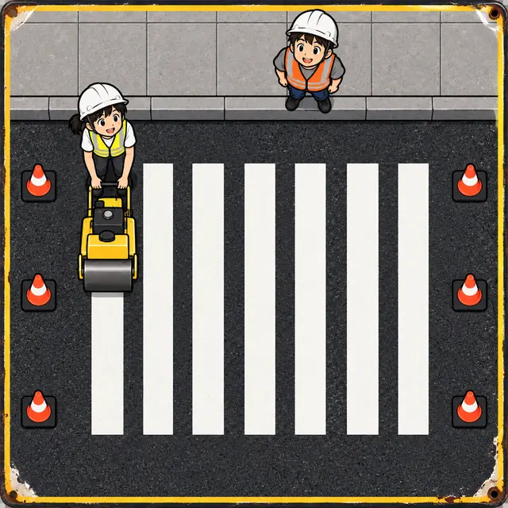
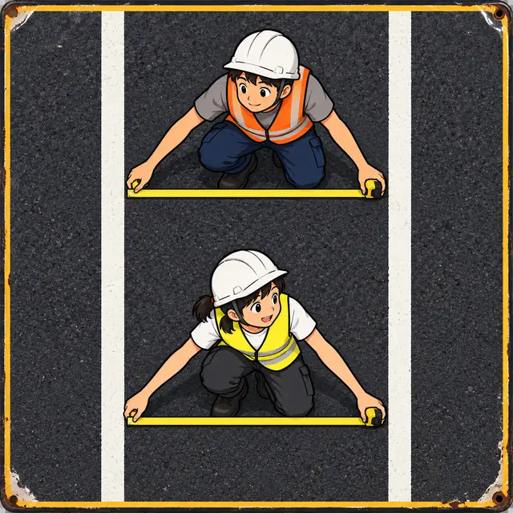
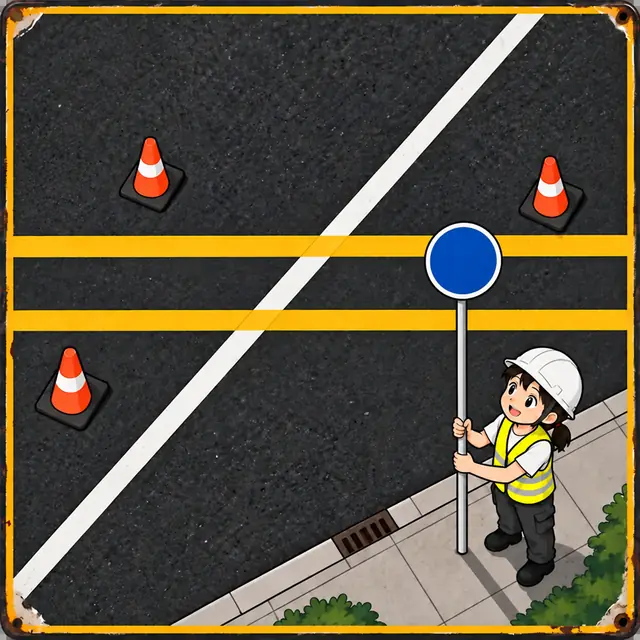
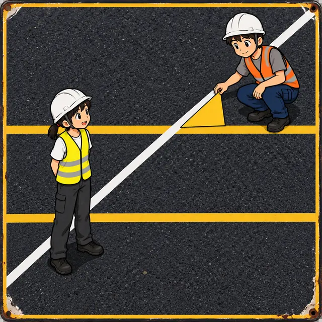
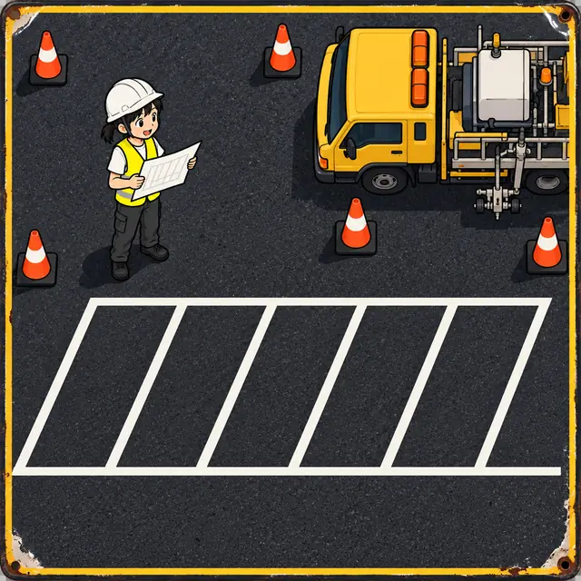
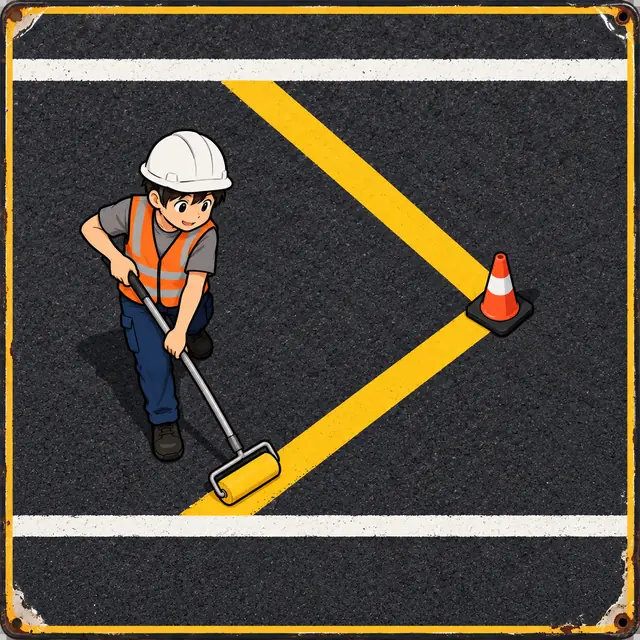
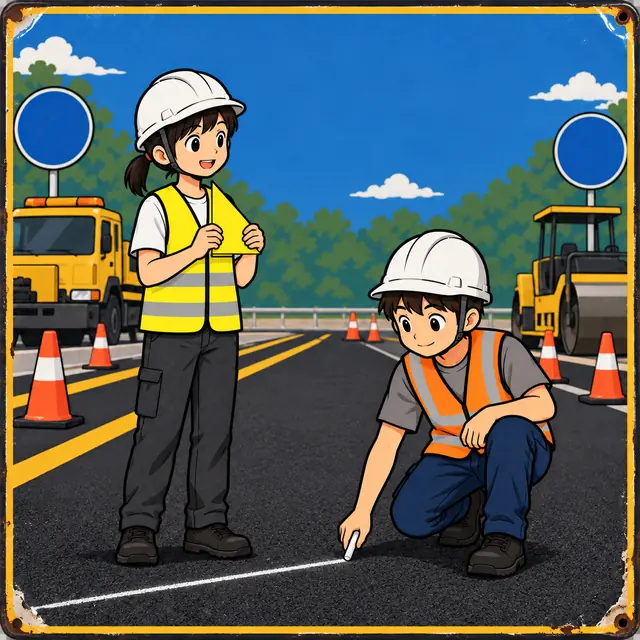
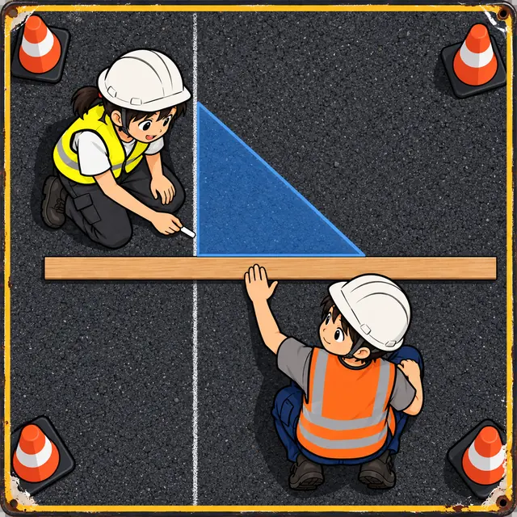

課前暖身漫畫：目測畫出來的車道線
阿平推著畫線車，照著第一條車道線「目測」畫出第二條；畫完回頭一看，兩條線在遠處越靠越近。小線拉開捲尺在前後兩個地方各量一次，寬度竟然不一樣。兩條平行線之間的距離處處相等——畫之前先量兩個地方，才知道有沒有畫歪。
重點 1：平行的意義——有一條共同的垂直線
重點整理與敘述
- 在同一平面上，兩條相異直線如果可以找到一條共同的垂直線，就稱這兩直線互相平行。
- \(L_1\) 與 \(L_2\) 同時垂直於直線 \(L\)，記作 \(L_1 /\!/ L_2\)，讀作「\(L_1\) 平行於 \(L_2\)」。
- 生活中的窗框、柵欄、梯子的橫桿、斑馬線：每一組平行線都同時垂直於某一條直線。
- 不能只憑「畫出來的兩段沒有碰到」判斷：紙上畫的只是一小段，延長之後可能相交。要找的是共同垂線。
視覺互動探索：找共同垂線
黃色虛線 \(M\) 永遠垂直 \(L_1\)。調整 \(L_2\) 的傾斜，左右移動 \(M\)，看 \(M\) 和 \(L_2\) 夾幾度：只有夾 \(90^\circ\) 時，\(M\) 才是兩條線的共同垂線。
形成性評量 (平行的意義)
Q1. 平面上有相異的四條直線 \(a\)、\(b\)、\(c\)、\(d\)，已知 \(a \perp c\)、\(b \perp c\)、\(b \perp d\)。下列哪一個敘述正確？
解析：答案為 B。\(c\) 同時垂直 \(a\)、\(b\)，是 \(a\)、\(b\) 的共同垂線，所以 \(a /\!/ b\)；\(b\) 同時垂直 \(c\)、\(d\)，是 \(c\)、\(d\) 的共同垂線，所以 \(c /\!/ d\)。
A、C 錯：各漏了另一組。
D 錯：\(a /\!/ b\) 而 \(b \perp d\)，所以 \(d\) 也垂直 \(a\)，\(a\) 與 \(d\) 互相垂直，不是平行。
Q2. 長方形 \(ABCD\) 的四個內角都是 \(90^\circ\)。小線說「\(\overline{AB} /\!/ \overline{CD}\)」，下列哪一個理由最恰當？
解析：答案為 D。\(\angle B = \angle C = 90^\circ\)，所以 \(\overline{AB}\)、\(\overline{CD}\) 都垂直於 \(\overline{BC}\)，\(\overline{BC}\) 是它們的共同垂線，依定義互相平行。
A 錯：一樣長不代表平行，例如等腰三角形的兩腰一樣長，卻交在頂點。
B 錯：梯形只有一組對邊平行，一般四邊形的對邊不一定平行。
C 錯：兩條線都垂直於同一條線，得到的是平行，不是垂直。
重點 2：垂直一條就垂直另一條，平行可以遞移
重點整理與敘述
- 已知 \(L_1 /\!/ L_2\)，若直線 \(M \perp L_1\)，則 \(M \perp L_2\)：垂直其中一條，就垂直另一條。
- 理由：依定義 \(L_1\)、\(L_2\) 有共同垂線 \(L\)。\(L\)、\(M\)、\(L_1\)、\(L_2\) 圍出的四邊形已經有三個直角，第四個角也是 \(360^\circ - 270^\circ = 90^\circ\)。
- 平行的遞移性：\(L_1 /\!/ L_2\)、\(L_2 /\!/ L_3\) \(\Rightarrow\) \(L_1 /\!/ L_3\)，可以寫成 \(L_1 /\!/ L_2 /\!/ L_3\)。（作 \(M \perp L_1\)，一路垂直到 \(L_3\)，\(M\) 就是 \(L_1\)、\(L_3\) 的共同垂線。）
- 小心：兩條線都垂直於同一條線，它們互相平行；「垂直的垂直」不是垂直。
\(L_1 /\!/ L_2\)，\(L_2 /\!/ L_3\) \(\Rightarrow\) \(L_1 /\!/ L_3\)

視覺互動探索：一步一步推出來
選一個性質，按「下一步」看推理怎麼一步步走；拉動滑桿把整組圖形轉一個角度，結論不會改變。
形成性評量 (平行線的性質)
Q3. 平面上有相異直線 \(L_1\)、\(L_2\)、\(M\)、\(N\)，已知 \(L_1 /\!/ L_2\)、\(M \perp L_1\)、\(N \perp L_2\)，則 \(M\) 與 \(N\) 的關係為何？
解析：答案為 A。\(L_1 /\!/ L_2\) 且 \(M \perp L_1\)，所以 \(M \perp L_2\)。現在 \(M\)、\(N\) 都垂直於 \(L_2\)，\(L_2\) 是它們的共同垂線，所以 \(M /\!/ N\)。
B 錯：兩條都垂直於同一條線，是平行而不是垂直。
C、D 錯：條件足夠推出平行，平行線不會相交。
Q4. 平面上有相異直線 \(a\)、\(b\)、\(c\)、\(d\)，已知 \(a \perp b\)、\(b \perp c\)、\(c \perp d\)，則 \(a\) 與 \(d\) 的關係為何？
解析：答案為 C。\(a \perp b\)、\(b \perp c\)，\(b\) 是 \(a\)、\(c\) 的共同垂線，所以 \(a /\!/ c\)。又 \(d \perp c\)，垂直平行線中的一條就垂直另一條，所以 \(d \perp a\)。
A 錯：把三次垂直都想成「垂直的垂直是平行」，只對了前兩次。
B 錯：一步一步推，條件剛好足夠。
D 錯：推得出是垂直。
重點 3：兩平行線的距離處處相等
重點整理與敘述
- 兩平行線之間的垂直線段都等長（它們是長方形的對邊）。這個長度叫做兩平行線的距離。
- 兩平行線的距離處處相等，所以兩平行線永不相交。
- 應用：一個三角形的底在一條線上、頂點在另一條平行線上，不管頂點在哪裡，高都等於兩平行線的距離。所以同底的這些三角形面積都相等。
- 例：\(L /\!/ M\)，\(D\)、\(E\) 在 \(M\) 上，\(\overline{DE} = 6\)，兩線的距離是 \(5\)。\(A\)、\(B\) 在 \(L\) 上，則 \[\begin{aligned} & \triangle ADE = \triangle BDE \\ &= \frac{1}{2} \times 6 \times 5 = 15 \end{aligned}\]

視覺互動探索：滑動頂點
\(L /\!/ M\)，底 \(\overline{DE}\) 在 \(M\) 上。拉動滑桿讓頂點 \(A\) 在 \(L\) 上滑動，看 \(\triangle ADE\) 的高與面積有沒有改變；再改變兩線的距離與底的長度。
形成性評量 (兩平行線的距離)
Q5. 如圖，\(\overline{AE} /\!/ \overline{BD}\)，\(C\) 在 \(\overline{BD}\) 上。若 \(\overline{AE} = 8\)、\(\overline{BD} = 10\)，\(\triangle ABD\) 的面積是 \(35\)，則 \(\triangle ACE\) 的面積是多少？
解析：答案為 C。設兩平行線的距離為 \(h\)，由 \(\triangle ABD\)：
\[\begin{aligned} & \frac{1}{2} \times 10 \times h = 35 \\ & h = 7 \end{aligned}\]
兩平行線的距離處處相等，\(\triangle ACE\) 以 \(\overline{AE}\) 為底，高也是 \(7\)：
\[\frac{1}{2} \times 8 \times 7 = 28\]
A 錯：求高時忘了乘 \(2\)，得到 \(h = 3.5\)，算出 \(14\)。
B 錯：兩個三角形的高相同，但底不同，面積不相等。
D 錯：\(8 \times 10 \div 2 = 40\)，把兩條底相乘了。
Q6. 在同一平面上，與直線 \(L\) 的距離是 \(4\) 的直線有幾條？它們和 \(L\) 是什麼關係？
解析：答案為 A。「距離」是兩平行線之間垂直線段的長，只有跟 \(L\) 平行的直線才有固定的距離。\(L\) 的上方、下方各有一條離它 \(4\) 的平行線。
B 錯：漏了另一側。
C 錯：距離是 \(4\) 不代表有 \(4\) 條。
D 錯：跟 \(L\) 相交的直線，離 \(L\) 越來越近，沒有固定的距離。
重點 4：截線與截角——同位角、內錯角、同側內角
重點整理與敘述
- 直線 \(L\) 與 \(L_1\)、\(L_2\) 交於不同的兩點，\(L\) 叫做 \(L_1\)、\(L_2\) 的截線，形成的八個夾角都叫做截角。
- 課本的編號：截線與 \(L_1\) 的交點是 \(\angle 1\) 左上、\(\angle 2\) 右上、\(\angle 3\) 左下、\(\angle 4\) 右下；與 \(L_2\) 的交點依序是 \(\angle 5\)～\(\angle 8\)。
| 名稱 | 位置 | 例 |
|---|---|---|
| 同位角 | 位置對應相同 | \(\angle 1\)、\(\angle 5\) |
| 內錯角 | 兩線之間，在截線兩側 | \(\angle 3\)、\(\angle 6\) |
| 同側內角 | 兩線之間，在截線同側 | \(\angle 3\)、\(\angle 5\) |
- 名稱是依位置取的：\(L_1\)、\(L_2\) 不平行，照樣有同位角、內錯角、同側內角。
- \(\angle 1\)、\(\angle 2\)、\(\angle 7\)、\(\angle 8\) 在兩線的外側，只有同位角，沒有內錯角與同側內角。
- 圖的編號方式不一定跟課本一樣，判斷時看位置，不要背號碼。

視覺互動探索：點一個角，找它的夥伴
選一個角和一種關係，畫布會把它的夥伴標成藍色。把 \(L_2\) 轉斜，兩線不平行時名稱還在不在？
形成性評量 (截角的名稱)
Q7. 如圖，直線 \(L\) 截 \(L_1\)、\(L_2\)（注意：這張圖的編號跟課本不同）。\(\angle 2\) 的同位角是哪一個？
解析：答案為 D。這張圖每個交點都從右上開始、逆時針編號。\(\angle 2\) 在 \(L_1\) 的上方、截線的左側；\(L_2\) 上同樣在上方、左側的是 \(\angle 6\)。兩線不平行也照樣是同位角。
A 錯：\(\angle 5\) 在 \(L_2\) 的上方、右側。
B 錯：\(\angle 7\) 在下方、左側。
C 錯：\(\angle 8\) 在下方、右側。
Q8. 承 Q7 的圖，下列哪一組是內錯角？
解析：答案為 A。\(\angle 4\) 在 \(L_1\) 下方、截線右側，\(\angle 6\) 在 \(L_2\) 上方、截線左側：兩個都夾在兩線之間（內），又分在截線兩側（錯）。
B 錯：\(\angle 3\)、\(\angle 6\) 都在截線左側，是同側內角。
C 錯：\(\angle 4\)、\(\angle 8\) 位置對應相同，是同位角。
D 錯：\(\angle 1\)、\(\angle 7\) 在兩線的外側，不是內錯角。
重點 5：平行線的截角性質——同位角、內錯角相等，同側內角互補
重點整理與敘述
- 兩平行線被另一直線所截：同位角相等、內錯角相等、同側內角互補。
- 截線垂直兩平行線時，八個角都是 \(90^\circ\)。
- 不垂直時，八個角只有兩種大小，一大一小、互為補角。
- 例：\(L_1 /\!/ L_2\)，\(\angle 2 = 70^\circ\)。對頂角 \(\angle 3 = 70^\circ\)；補角 \(\angle 1 = \angle 4 = 110^\circ\)；同位角 \(\angle 5 = 110^\circ\)、\(\angle 6 = \angle 7 = 70^\circ\)、\(\angle 8 = 110^\circ\)。
- 前提是兩線平行：不平行時同位角照樣有名稱，但不一定相等。

視覺互動探索：知道一個角，八個全知道
\(L_1 /\!/ L_2\)。選一個「已知角」，再選一種關係，看它的夥伴是相等還是互補；拉動滑桿轉動截線，黃色的角永遠一樣大，藍色的永遠一樣大。
形成性評量 (截角性質)
Q9. 如圖，\(L_1 /\!/ L_2\)，直線 \(L\) 是截線。若 \(\angle 6 = 58^\circ\)，則 \(\angle 1\) 是幾度？
解析：答案為 B。\(\angle 6\) 與 \(\angle 2\) 是同位角，\(L_1 /\!/ L_2\)，所以 \(\angle 2 = 58^\circ\)；\(\angle 1\)、\(\angle 2\) 合成一個平角：
\[\angle 1 = 180^\circ - 58^\circ = 122^\circ\]
A 錯：\(\angle 1\) 的同位角是 \(\angle 5\)，不是 \(\angle 6\)。
C 錯：\(90^\circ - 58^\circ\)，把互補當成互餘。
D 錯：\(90^\circ + 58^\circ\)，沒有根據。
Q10. 如圖，\(L_1 /\!/ L_2\)，截線 \(L\) 與 \(L_1\) 不垂直。下列哪一個關係是錯誤的？
解析：答案為 D。八個角只有兩種大小：\(\angle 1 = \angle 4 = \angle 5 = \angle 8\) 是一種，\(\angle 2 = \angle 3 = \angle 6 = \angle 7\) 是另一種，兩種互補。\(\angle 1\) 與 \(\angle 6\) 分屬兩種，只有截線垂直時才會相等。
A 對：\(\angle 2 = \angle 6\)（同位角），\(\angle 6 = \angle 7\)（對頂角）。
B 對：內錯角相等。
C 對：同側內角互補。
重點 6：截角用 \(x\) 表示——先判斷關係，再列方程式
重點整理與敘述
- 兩平行線的截角用含 \(x\) 的式子表示時，先判斷兩個角的關係：同位角、內錯角 \(\Rightarrow\) 列「相等」；同側內角 \(\Rightarrow\) 列「和是 \(180^\circ\)」。
- 例：\(L /\!/ M\)，一組同位角是 \((3x - 25)^\circ\) 與 \((x + 35)^\circ\)： \[\begin{aligned} & 3x - 25 = x + 35 \\ & 2x = 60 \\ & x = 30 \end{aligned}\] 每個角都是 \(65^\circ\)。
- 例：一組同側內角，較大角是較小角的 \(4\) 倍。設較小角 \(x^\circ\)：\(x + 4x = 180\)，\(x = 36\)，兩角是 \(36^\circ\) 與 \(144^\circ\)。
- 解出 \(x\) 後要代回去：題目常問的是角度，而且每個角都要在 \(0^\circ\) 到 \(180^\circ\) 之間。
視覺互動探索：列式解角度
選兩個角的關係，調整兩個式子的係數與常數。畫布會列式、解出 \(x\)、代回去，並依解出的角度畫出截線。注意題目問的是 \(x\) 還是角度。
形成性評量 (列方程式)
Q11. 如圖，\(L /\!/ M\)，\(\angle 1 = (3x + 16)^\circ\)、\(\angle 2 = (5x - 4)^\circ\)，則 \(x\) 是多少？
解析：答案為 B。\(\angle 1\)、\(\angle 2\) 都夾在 \(L\)、\(M\) 之間、在截線的同一側，是同側內角，互補：
\[\begin{aligned} & (3x + 16) + (5x - 4) = 180 \\ & 8x + 12 = 180 \\ & 8x = 168 \\ & x = 21 \end{aligned}\]
代回去 \(\angle 1 = 79^\circ\)、\(\angle 2 = 101^\circ\)。
A 錯：誤以為兩角相等，\(3x + 16 = 5x - 4\) 得 \(x = 10\)。
C 錯：移項沒有變號，\(8x = 180 + 12\) 得 \(x = 24\)。
D 錯：把兩角相減當成 \(180\)，\(2x - 20 = 180\) 得 \(x = 100\)。
Q12. 如圖，\(L /\!/ M\)，\(\angle 1 = (4x - 18)^\circ\)、\(\angle 2 = (2x + 30)^\circ\)，則 \(\angle 1\) 是幾度？
解析：答案為 C。\(\angle 1\)、\(\angle 2\) 夾在兩線之間、分在截線兩側，是內錯角，相等：
\[\begin{aligned} & 4x - 18 = 2x + 30 \\ & 2x = 48 \\ & x = 24 \end{aligned}\]
所以 \(\angle 1 = 4 \times 24 - 18 = 78^\circ\)。
A 錯：\(24\) 是 \(x\)，題目問的是 \(\angle 1\)。
B 錯：\(180^\circ - 78^\circ\)，算成了補角。
D 錯：誤以為互補，\(6x + 12 = 180\) 得 \(x = 28\)，\(\angle 1 = 94^\circ\)。
重點 7：好幾條截線、兩組平行線——一步只用一組
重點整理與敘述
- 圖上有好幾條截線，或有兩組平行線時，每一步只看一條截線、一組平行線。
- 每一步都寫出理由：用了哪一組平行線、哪一種角的關係（同位角、內錯角、同側內角），再加上對頂角、平角這些老工具。
- 例：\(L_1 /\!/ L_2\)，\(M_1 /\!/ M_2\)，\(M_1\) 與 \(L_1\) 的夾角是 \(65^\circ\)。
- \(L_1\) 截 \(M_1 /\!/ M_2\)：同位角 \(\angle 1 = 65^\circ\)；
- \(M_2\) 截 \(L_1 /\!/ L_2\)：同位角 \(\angle 3 = \angle 1 = 65^\circ\)；
- \(\angle 2\) 與 \(\angle 3\) 合成平角，\(\angle 2 = 115^\circ\)。
- 兩條不平行的截線之間，位置像同位角的兩個角不一定相等——那組線沒有平行。

視覺互動探索：角度一站一站傳
黃色、藍色是已知角，綠色、紅色是要求的角。切換「兩條截線」與「兩組平行線」，拉動滑桿改變截線的方向，看每一步用的是哪一組平行線。
形成性評量 (多條截線)
Q13. 如圖，\(L_1 /\!/ L_2\)，直線 \(M\)、\(N\) 都是截線。根據圖中標示的角度，\(x + y\) 是多少？
解析：答案為 A。看 \(M\)：\(x\) 與 \(63^\circ\) 夾在兩線之間、分在 \(M\) 的兩側，是內錯角，\(x = 63\)。看 \(N\)：\(y\) 與 \(74^\circ\) 都在 \(N\) 的右側、夾在兩線之間，是同側內角，\(y = 180 - 74 = 106\)。
\[x + y = 63 + 106 = 169\]
B 錯：把 \(y\) 當成跟 \(74^\circ\) 相等，\(63 + 74 = 137\)。
C 錯：把 \(x\) 當成 \(63^\circ\) 的補角，\(117 + 106 = 223\)。
D 錯：兩個關係都弄反，\(117 + 74 = 191\)。
Q14. 如圖，\(L_1 /\!/ L_2\)，\(M_1 /\!/ M_2\)，\(M_1\) 與 \(L_1\) 夾 \(71^\circ\)，則 \(\angle 2\) 是幾度？
解析：答案為 C。\(L_1\) 截 \(M_1 /\!/ M_2\)：\(M_2\) 與 \(L_1\) 的右上角也是 \(71^\circ\)（同位角）。\(M_2\) 截 \(L_1 /\!/ L_2\)：\(M_2\) 與 \(L_2\) 的右上角也是 \(71^\circ\)（同位角）。\(\angle 2\) 與它合成平角：
\[\angle 2 = 180^\circ - 71^\circ = 109^\circ\]
A 錯：\(\angle 2\) 在左上，不是 \(71^\circ\) 的同位角。
B 錯：\(90^\circ - 71^\circ\)，把互補當成互餘。
D 錯：\(2 \times 71^\circ\)，沒有根據。
重點 8：兩平行線之間的拐角——作一條平行線
重點整理與敘述
- \(L_1 /\!/ L_2\)，折線 \(A \to B \to C\) 在兩線之間拐一個彎，\(\angle 1\)、\(\angle 2\) 分別是 \(\overline{AB}\)、\(\overline{CB}\) 與兩線朝拐點那一側的夾角，則 \[\angle ABC = \angle 1 + \angle 2\]
- 作法一：過拐點 \(B\) 作 \(L_3 /\!/ L_1\)（也就平行 \(L_2\)），\(\angle ABC\) 被切成兩塊，各是一組內錯角。
- 作法二：延長 \(\overline{CB}\) 交 \(L_1\) 於 \(D\)，內錯角把 \(\angle 2\) 搬到 \(D\)；\(\angle ABC\) 是 \(\triangle ABD\) 的外角，等於兩個內對角的和。
- 已知角若標在另一側（鈍角那一邊），要先取補角再相加。
- 例：\(\angle 1 = 40^\circ\)、\(\angle 2 = 35^\circ\)，則 \(\angle ABC = 75^\circ\)。

視覺互動探索：兩種輔助線
拉動滑桿改變兩邊的角。切換輔助線的畫法，看 \(\angle ABC\) 怎麼被拆成兩塊；把已知角改成「標在另一側」，記得先取補角。
形成性評量 (拐角)
Q15. 如圖，\(L_1 /\!/ L_2\)，根據圖中標示的角度，\(\angle ABC\) 是幾度？
解析：答案為 B。過 \(B\) 作 \(L_3 /\!/ L_1\)，則 \(L_3 /\!/ L_2\)。\(\angle ABC\) 被切成兩塊，分別與 \(37^\circ\)、\(46^\circ\) 是內錯角：
\[\angle ABC = 37^\circ + 46^\circ = 83^\circ\]
A 錯：\(180^\circ - 83^\circ\)，多取了一次補角。
C 錯：\(46^\circ - 37^\circ\)，兩塊應該相加。
D 錯：\(360^\circ - 83^\circ\) 是 \(B\) 外側的角。
Q16. 如圖，\(L_1 /\!/ L_2\)，\(A\) 處標示的 \(142^\circ\) 是 \(\overline{AB}\) 與 \(L_1\) 在另一側的夾角，\(C\) 處標示 \(49^\circ\)。\(\angle ABC\) 是幾度？
解析：答案為 D。\(A\) 處朝拐點那一側的角是 \(180^\circ - 142^\circ = 38^\circ\)。過 \(B\) 作平行線，兩塊內錯角相加：
\[\angle ABC = 38^\circ + 49^\circ = 87^\circ\]
A 錯：\(180^\circ - 87^\circ\)，多取了一次補角。
B 錯：\(142^\circ + 49^\circ\)，沒有先把 \(142^\circ\) 換成拐點這一側的角。
C 錯：\(180^\circ - 49^\circ\)，取補角取錯了角。
重點 9：平行線的判別——由角度推出平行
重點整理與敘述
- 兩直線被另一直線所截，若符合下列任一條件，這兩直線互相平行：同位角相等、內錯角相等、同側內角互補。
- 一組成立就夠了，其他組會跟著成立。
- 差 \(1^\circ\) 也不平行：眼睛看起來平行不算數，要用角度判斷。
- 例：\(\angle 4 = 128^\circ\)、\(\angle 6 = 52^\circ\) 是同側內角，\(128^\circ + 52^\circ = 180^\circ\)，所以兩線平行。
| 截角性質 | 判別性質 |
|---|---|
| 已知兩線平行 \(\Rightarrow\) 推出角的關係 | 已知角的關係 \(\Rightarrow\) 推出兩線平行 |
視覺互動探索：角度決定平不平行
截線 \(M\) 固定，兩條直線跟著兩個角的度數轉動。選一種關係，調到「相等」或「和是 \(180^\circ\)」時，兩條線才會平行；差一點點，看看它們在哪裡相交。
形成性評量 (平行線的判別)
Q17. 如圖，直線 \(M\) 截 \(L_1\)、\(L_2\) 出八個角（課本的編號）。下列哪一個條件可以判斷 \(L_1 /\!/ L_2\)？
解析：答案為 B。\(\angle 1 = 103^\circ\)，與它合成平角的 \(\angle 2 = 77^\circ\)；\(\angle 8 = 103^\circ\)，與它合成平角的 \(\angle 6 = 77^\circ\)。\(\angle 2 = \angle 6\) 是同位角相等，所以 \(L_1 /\!/ L_2\)。
A 錯：\(\angle 3\)、\(\angle 5\) 是同側內角，\(87^\circ + 87^\circ = 174^\circ \ne 180^\circ\)。
C 錯：\(\angle 4\)、\(\angle 6\) 是同側內角，\(97^\circ + 97^\circ = 194^\circ \ne 180^\circ\)。
D 錯：\(\angle 3 = \angle 2 = 69^\circ\)（對頂角），與同側內角 \(\angle 5\) 的和是 \(138^\circ \ne 180^\circ\)。
Q18. 如圖，直線 \(a\)、\(b\)、\(c\)、\(d\) 相交，\(\angle 1 = 123^\circ\)、\(\angle 2 = 58^\circ\)、\(\angle 3 = 57^\circ\)。下列敘述何者正確？
解析：答案為 C。看 \(c\) 截 \(a\)、\(b\)：\(\angle 1\)、\(\angle 3\) 是同側內角，\(123^\circ + 57^\circ = 180^\circ\)，所以 \(a /\!/ b\)。看 \(a\) 截 \(c\)、\(d\)：\(\angle 1\)、\(\angle 2\) 是同側內角，\(123^\circ + 58^\circ = 181^\circ \ne 180^\circ\)，所以 \(c\) 與 \(d\) 不平行。
A 錯：\(c\)、\(d\) 看起來差不多平行，但差 \(1^\circ\) 就不平行。
B、D 錯：\(a\)、\(b\) 有一組同側內角互補，是平行的。
重點 10：平分兩個截角——平分線平不平行？
重點整理與敘述
- \(\overline{AB} /\!/ \overline{CD}\)，直線 \(EG\) 截兩線。\(\overline{EF}\) 平分 \(\angle AEG\)、\(\overline{GH}\) 平分 \(\angle EGD\)（一組內錯角）：
- \(\angle AEG = \angle EGD\)（內錯角相等）；
- 各取一半：\(\angle 1 = \angle 2\)；
- \(\angle 1\)、\(\angle 2\) 是 \(\overline{EF}\)、\(\overline{GH}\) 被 \(EG\) 所截的內錯角 \(\Rightarrow\) \(\overline{EF} /\!/ \overline{GH}\)。
- 平分一組同位角，平分線也平行（相等的角，一半也相等）。
- 平分一組同側內角：兩半加起來是 \(90^\circ\)，兩條平分線互相垂直，不是平行。
- 先用截角性質（平行 \(\Rightarrow\) 角），再用判別性質（角 \(\Rightarrow\) 平行），兩個方向都用上了。

視覺互動探索：三種截角的平分線
選要平分哪一組截角，拉動滑桿轉動截線 \(EG\)。內錯角、同位角的平分線一直平行；同側內角的平分線一直交成 \(90^\circ\)。
形成性評量 (角平分線與平行)
Q19. 如圖，\(\overline{AB} /\!/ \overline{CD}\)，直線 \(EG\) 與兩線交於 \(E\)、\(G\)。\(\overline{EF}\) 平分 \(\angle BEG\)，\(\overline{GH}\) 平分 \(\angle CGE\)，則 \(\overline{EF}\) 與 \(\overline{GH}\) 的關係為何？
解析：答案為 A。\(\angle BEG\) 在 \(E\) 的右下、\(\angle CGE\) 在 \(G\) 的左上，夾在兩線之間、分在截線兩側，是一組內錯角。\(\overline{AB} /\!/ \overline{CD}\)，所以兩角相等；各取一半，\(\angle FEG = \angle EGH\)，它們又是 \(\overline{EF}\)、\(\overline{GH}\) 被 \(EG\) 所截的內錯角，所以 \(\overline{EF} /\!/ \overline{GH}\)。
B 錯：平分一組同側內角時，平分線才互相垂直。
C、D 錯：條件足夠推出平行。
Q20. 如圖，\(\overline{AB} /\!/ \overline{CD}\)，同側內角 \(\angle BGH\) 與 \(\angle DHG\) 的角平分線交於 \(I\)。若 \(\angle BGH = 64^\circ\)，則 \(\angle GHI\) 是幾度？
解析：答案為 D。同側內角互補：
\[\angle DHG = 180^\circ - 64^\circ = 116^\circ\]
\(\overline{HI}\) 平分 \(\angle DHG\)，所以 \(\angle GHI = 116^\circ \div 2 = 58^\circ\)。
A 錯：\(32^\circ\) 是 \(\angle BGH\) 的一半，那是 \(\angle IGH\)。
B 錯：同側內角互補，不是相等。
C 錯：\(90^\circ\) 是 \(\angle GIH\)。
重點 11：過線外一點作平行線
重點整理與敘述
- 方法一：直尺與三角板
- 三角板直角的一邊貼齊 \(L\)，直尺貼齊直角的另一邊；
- 直尺壓住不動，三角板沿直尺滑到 \(P\)，沿三角板的邊畫出 \(M\)。
- 理由：\(M\)、\(L\) 都垂直於直尺，有共同垂線。
- 方法二：尺規等角作圖
- 過 \(P\) 任意畫一直線 \(K\) 交 \(L\) 於 \(A\)，\(\angle 1\) 是 \(K\) 與 \(L\) 的夾角；
- 以 \(P\) 為頂點、\(K\) 為一邊，在 \(\angle 1\) 的同位角位置作 \(\angle 2 = \angle 1\)（第 3 章的等角作圖），延長另一邊就是 \(M\)。
- 理由：同位角相等，兩直線平行。畫在內錯角的位置也可以。
- 方法一的直尺一旦滑動就前功盡棄；方法二的等角要畫對位置。

視覺互動探索：一步一步畫平行線
選一種方法，按「下一步」看工具怎麼動；拉動滑桿移動 \(P\) 點再畫一次。尺規作圖的最後一步會量出 \(\angle 1\) 與 \(\angle 2\)。
形成性評量 (作平行線)
Q21. 阿平要過 \(P\) 作直線 \(L\) 的平行線。他在 \(A\) 量到 \(\angle 1 = 68^\circ\)，卻把等角 \(\angle 2 = 68^\circ\) 畫在 \(\angle 1\) 的同側內角位置，畫出直線 \(M\)。\(M\) 與 \(L\) 的關係為何？
解析：答案為 A。「相等」是同位角、內錯角的判別條件；同側內角要「和是 \(180^\circ\)」才平行。\(68^\circ + 68^\circ = 136^\circ\)，\(M\) 與 \(L\) 會和截線圍出一個三角形，交成 \(180^\circ - 136^\circ = 44^\circ\) 的角。
B 錯：把同側內角的條件記成了相等。
C 錯：兩線交成 \(44^\circ\)，不是 \(90^\circ\)。
D 錯：剛好相反，\(\angle 1 = 90^\circ\) 時兩角相等又互補，反而平行。
Q22. 四邊形 \(ABCD\) 的四個內角都不相等。小線把它沿著直線 \(AB\) 平移，得到四邊形 \(A'B'C'D'\)；阿平以直線 \(AB\) 為軸把它翻到另一側，得到四邊形 \(ABC'D'\)。誰一定能得到一組平行線？
解析：答案為 C。平移時 \(\angle DAB\) 原封不動搬到 \(\angle D'A'B'\)，兩角是 \(\overline{AD}\)、\(\overline{A'D'}\) 被直線 \(AB\) 所截的同位角，相等，所以 \(\overline{AD} /\!/ \overline{A'D'}\)。
翻到另一側後，\(\overline{AD}\) 與 \(\overline{BC'}\) 分在直線 \(AB\) 的兩側，要平行必須內錯角 \(\angle DAB = \angle ABC' = \angle ABC\)；但四個內角都不相等，所以不平行。A、B、D 都錯。
小節總結與核心回顧
平行速查表
- 定義：同一平面上兩相異直線有一條共同的垂直線 \(\Rightarrow\) 互相平行。
- 性質：垂直平行線中的一條就垂直另一條；平行可以遞移；兩平行線的距離處處相等。
- 截角名稱：同位角、內錯角、同側內角，只看位置。
- 截角性質（平行 \(\Rightarrow\) 角）：同位角相等、內錯角相等、同側內角互補。
- 判別性質（角 \(\Rightarrow\) 平行）：三個條件任一成立，兩直線平行。
- 多條線時一步只用一組平行線；拐角過拐點作平行線。
- 作圖：三角板沿固定的直尺滑動，或在同位角（內錯角）的位置作等角。
回到工班：畫一整排斜向停車格
先畫一條，再搬角度
停車場要畫一排斜向停車格。小線先沿著路邊拉一條基準線，再畫第一條斜線，量出它和基準線的夾角。接下來每一條斜線，都在同位角的位置畫出一樣大的角——同位角相等，所以每一條斜線都互相平行。
收工前的檢查
阿平不用眼睛看，而是在每兩條斜線之間各量一次垂直距離：距離處處相等，才是真的平行。量到不一樣的那一格，就是畫歪的那一條。
下一節
兩組平行線交出來的四邊形叫做平行四邊形。下一節會用這一節的截角性質，推出它的對邊、對角與對角線有什麼性質。